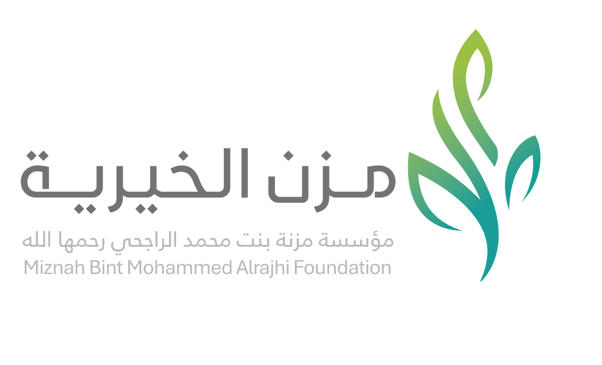

+2M
وجه حفظ ومراجعة لكتاب الله

رحلة رقمية مختصرة توثق ما تحقق من مشاريع ومبادرات وأثر ملموس في التعليم والدعوة وخدمة الحرمين والصحة والغذاء وتمكين العمل الخيري.
لقطة مركزة على أبرز النتائج التي تعكس اتساع مجالات العطاء خلال النصف الأول من عام 2026م.
مشروعات تنوعت مجالاتها، واجتمعت في خدمة مقاصد الوقف وتعظيم أثرها في المجتمع.
تترجم المشاريع المدعومة مقاصد الوقف إلى مبادرات عملية تخدم القرآن والسنة والدعوة وبيوت الله وشعائر الإسلام وأوجه البر والخير.
نسب الارتباط مؤشرات تقديرية تعكس مدى حضور كل بند من بنود شرط الواقفة في المشاريع المدعومة، استنادًا إلى طبيعة المشاريع ومخرجاتها.
يمتد أثر مشاريع المؤسسة إلى شرائح متنوعة من المستفيدين، من طلاب القرآن والدعاة إلى المرضى وضيوف بيت الله والجمعيات الأهلية.
أثرٌ يُقاس بالأرقام، ونتائجُ تُترجم العطاء إلى أثرٍ ملموس.
في النصف الأول من عام 2026م، تحولت موارد الوقف إلى مشاريع وبرامج وخدمات تركت أثرًا ملموسًا في التعليم والدعوة وخدمة الحرمين والصحة والغذاء وتمكين العمل الخيري وغير ذلك.